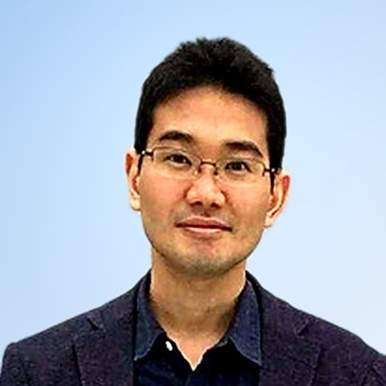
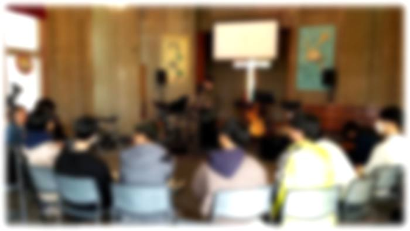
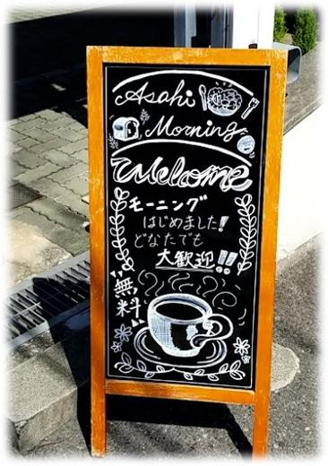
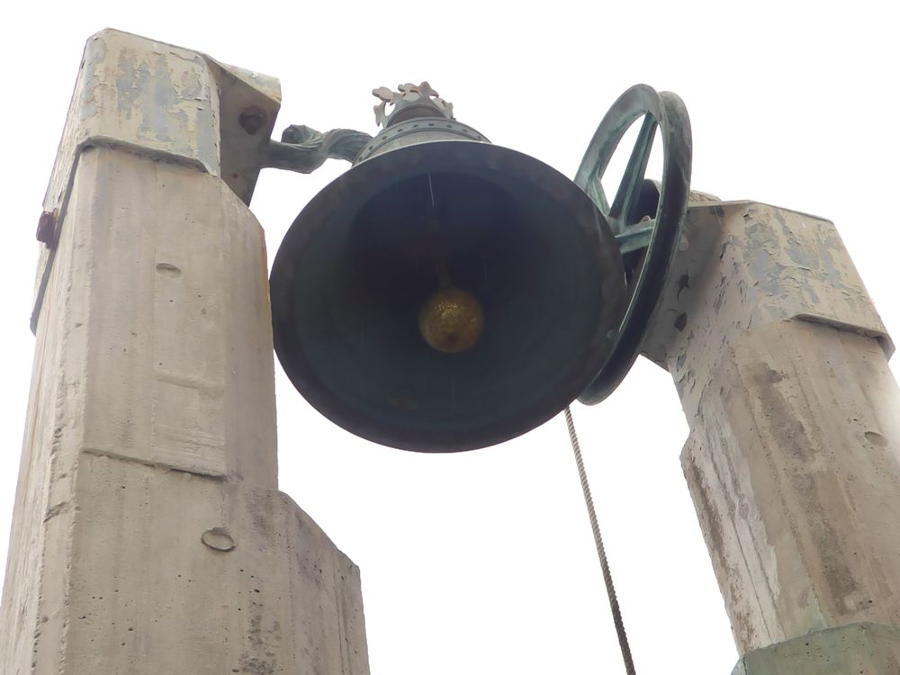

食べること・食卓
働きとのつながり神学校の卒業研究は「永遠のいのちと飲食の関係について」。コイノニアの手づくりの食事や、モーニングカフェの「みことばが食べられるカフェ」も、この「好き」から生まれています。

κοινωνία
コイノニア ― ギリシャ語で「交わり」
名古屋を拠点に、子ども・中高生・学生・青年に寄り添い、助けを必要とする教会に仕える牧師、新井智也の働きです。教会や教団の枠を越えて青年が安心して集える「コイノニア」は、4年間で160人の青年の居場所になりました。この交わりを続けるために、祈りと献金で支えてください。
彼らはいつも、使徒たちの教えを守り、交わりを持ち、パンを裂き、祈りをしていた。使徒の働き 2章42節毎月の支え 目標30万円のうち約10万円 33% あと20万円 →
コイノニアの開催回数
(2022年10月〜2026年9月)
のべ参加者数
(参加者は160人)
2026年に礼拝説教で奉仕した教会
KGK協力者として学内訪問、
地区のイベント・集会に参加
ABOUT

1983年、名古屋市生まれ。クリスチャンホームで育ち、20歳のクリスマスに洗礼を受けました。一般企業でPCインストラクターとして働いたのち、2012年に献身。現在は朝日聖書教会の協力牧師兼次世代育成担当主事として、KGK(キリスト者学生会)の協力者としても学生に寄り添っています。
大切にしているのは、「人に寄り添う理解者」として、一人ひとりと時間をかけて向き合うことです。私自身、浪人で友人から取り残された経験や、大切な存在を失った悲しみを通して、「居場所がない」つらさを知りました。だからこそ、孤独を覚えている人を置き去りにせず、安心して集える場をつくり、そこに居続けることが、私の働きの中心にあります。
もう一つの役割は、教会と教会、人と人をつなぐことです。JECAの内外、KGK、超教派の青年の集い、地方の教会を行き来しながら、教団・教派・地域を越えて青年と教会を結びつけています。
TESTIMONY 1
私はクリスチャンホームに生まれ、自由ヶ丘キリスト教会で育ちました。大学1年の4月、姉に連れられて初めてKGK(キリスト者学生会)の祈祷会に参加しました。教会の部屋いっぱいの大学生が、互いの大学のために熱心に祈る姿は、今でもよく覚えています。
その年の夏期学校の「静思の時」に、御言葉から救いの確信が与えられました。飼っていたうさぎの死も、いのちと向き合うきっかけになりました。そして2003年のクリスマス、20歳で洗礼を受けました。翌年の夏期学校で聞いた「クリスチャンとは御言葉に生きる者である」という言葉は、今も私の歩みの土台です。KGKの交わりの中で、「一人の人が救われる」大きな喜びも経験しました。
大学院の頃、「イエス・キリストに従って、この生涯をすべてお献げしよう」という決意が与えられました。道を祈り求めながら、まずは社会で働くことを選び、PCインストラクターとして3年間勤めました。働く中で、主に信頼しなければ生きられない自分に気づかされ、御言葉に生きようとする者を主は決して見捨てない、憐れみ深く恵み深い方だと教えられました。
2012年1月、聖日礼拝で与えられた詩篇119篇とテモテへの手紙第二の御言葉から、教会に集う一人ひとり、特に若者が整えられるために自分を献げて仕えたい、という思いが与えられました。2012年2月に献身し、5月に会社を退職して、この道を歩み始めました。KGKの交わりと御言葉によって私の人生が変えられたように、若い人たちに、主に従う者の素晴らしさを伝え続けたいと願っています。
どのようにして若い人は自分の道をきよく保てるでしょうか。あなたのことばに従ってそれを守ることです。詩篇 119篇9節(献身のときに与えられた御言葉)
TESTIMONY 2
2020年4月、コロナ禍の中で、私はさまざまな困難とプレッシャーを抱えていました。やがてうつ病になり、不眠症にもなり、心も体も壊れて、まったく動けなくなってしまいました。
その年の9月から5か月間、働きを休職しました。何もできない、苦しい日々でした。けれども、教会の信徒の方々や友人の牧師たちが寄り添い、支え続けてくれました。その中で、少しずつ回復していきました。
祈りつつ、改めて自分の召命を確かめるまでに、2年近くかかりました。そして奇跡的に、もう一度牧師として働きを始めることができました。弱さを通ったからこそ、今、悩みを抱える青年や、疲れを覚える教会に寄り添いたいと願っています。
わたしの恵みはあなたに十分である。わたしの力は弱さのうちに完全に現れるからである。コリント人への手紙 第二 12章9節
GIFTS & GROWTH
「自分が孤独だった場所を知っていて、そこに誰かを置き去りにしない」。これまでの歩みを振り返り、自己分析を重ねる中で見えてきた、私の働きの芯です。
大学院時代に自宅を開いて始めた青年の交わりから、いまのコイノニアまで、20年近く同じことを続けてきました。教える前に、まず食卓を囲み、夜遅くまで一緒にいること。
話を聞いてほしい青年のところへ、遠くの小さな教会や友人の牧師のところへ出かけていきます。推薦のことばの「いつまでも時間を過ごす」「訪ね歩く」姿は、私が大切にしていることです。
JECAの内外、KGK、超教派の青年の集い、地方の教会。教団・教派・地域を越えて、青年と教会、教会と教会を結びつけています。
11年間飼っていたうさぎ「クック」を失った悲しみは、今も癒えきってはいません。その経験から、大切な存在を失った人の悲しみに寄り添い、いまはペットを見送るご家族のお別れにも取り組んでいます。動物や被造物の救いを聖書から考える学びも続けています。
それぞれが賜物を受けているのですから、神の様々な恵みの良い管理者として、その賜物を用いて互いに仕え合いなさい。ペテロの手紙 第一 4章10節
PET LOSS CARE
11年共に暮らしたうさぎ「クック」との別れは、私の信仰の転機の一つでした。いま、ペットを亡くした方から「キリスト教では、どのようにお別れをすればよいのでしょうか」と尋ねられることが増えています。家族同然の命を見送った方の悲しみに、祈りをもって寄り添う働きを始めています。

ご家庭や教会で、聖書のことばと祈り、ご希望に応じて讃美歌や思い出の時間をもちます。信仰の有無にかかわらずご相談いただけます。
共に暮らした動物を亡くした方々と集い、命を与えてくださった神さまに感謝し、悲しむ方の慰めを祈ります。
動物も、神さまが造り、顧みておられる命です。聖書・神学史・現代の議論を学び、誠実なことばで悲しむ方に寄り添えるよう備えています。
火葬を含むペット葬儀は、専門の業者との連携や必要な手続きを確認しながら準備しています。内容と費用が決まりしだい、お知らせします。
一羽の雀さえ、神さまはお忘れになりません。ルカの福音書 12章6節より
FAVORITES
これまでのプロフィールや自己紹介、キャンプのしおりなどを読み返すと、新井の「好き」は大きく4つに分かれます。そしてどれも、働きのスタイルにそのままつながっています。
働きとのつながり神学校の卒業研究は「永遠のいのちと飲食の関係について」。コイノニアの手づくりの食事や、モーニングカフェの「みことばが食べられるカフェ」も、この「好き」から生まれています。
働きとのつながりお気に入りのリフレッシュは「友人と銭湯や車の中でまったり話す」こと。合宿の夜の銭湯と深夜ラーメンが定番なのは、肩の力を抜いて本音が話せる時間を大切にしているからです。
働きとのつながり憧れの人に、ゲーム音楽の作曲家の植松伸夫さんと光田康典さんを挙げるほどのゲーム好き。御言葉を打ち込んで進むタイピングRPG「みことばタイピングクエスト」も制作中です。子どもや学生と遊びを通して聖書を伝え、サブカルチャーにも福音の光を当てる発信につながっています。
働きとのつながりいちばん好きな動物はうさぎ。飼っていたうさぎの死は、信仰を持つきっかけの一つになりました。今は、動物や被造物の救いを聖書から考える「動物の神学」にも関心を寄せています。
まとめの出典:これまでの自己紹介文、教会の転入会アンケート、KGK夏期学校の講師紹介、展示資料など。
WHY KOINONIA
日本の教会には青年が少なく、青年たちは学業や仕事に追われ、ゆっくり語り合える交わりも乏しくなっています。けれども、人格的な深い交わりを求めている青年は、クリスチャンにもノンクリスチャンにもたくさんいます。いちばん大きな課題は、この霊的な渇きです。
同世代の信仰の友がいない教会も多く、「自分だけ」と孤独を覚える青年がいます。
学業・仕事・奉仕に追われ、礼拝のあとも本音を話す時間がありません。
悩みを分かち合い、祈り合える関係を、信仰の有無を問わず多くの青年が求めています。
教会の中にも外にも、弱さや本音を安心して話せる機会と場所が、青年たちにはほとんどありません。
コイノニアは、青年たちが安心して交われる機会と場所を、これからも定期的に提供していきます。合宿・お泊り会、食事会、各地での集いを通して、いつでも帰って来られる居場所を開き続けます。
参加者アンケートでは毎回6〜8割の方が「このような集まりはとても必要」と答え、「教会では言いづらい事を話せる」という声が届いています。この場を守り、広げていくために、皆さまの祈りと支えが必要です。
すべて疲れた人、重荷を負っている人はわたしのもとに来なさい。わたしがあなたがたを休ませてあげます。マタイの福音書 11章28節
KOINONIA
コイノニアは、教会や教団の枠を越えて青年たちが集い、食卓を囲み、賛美し、御言葉と祈りを分かち合う場です。信仰に孤独を覚える青年が、自分の弱さを出しても受け入れられ、安心して交われる場所でありたいと願っています。


2025年7月の合宿は申込43人で過去最多に。アンケートでは毎回6〜8割の方が「このような集まりはとても必要」と答えています。
お互いに聖書の土台があるので、教会では言いづらい事を話せる。2025年7月 合宿
色々と話をするなかで、みんな似たようなことに悩んだりしてるんだなって言うことが分かって安心しました。2026年 年始お泊り会
この時期に合宿に参加できて、自分が今年1年、クリスチャンとしてこう歩んでいこうという指標が立てられた気がしています。2025年 年始お泊り会
深夜まで交わりを共にして下さっていながら、誰よりも早く起きて食事の準備をしてくださる姿を見て尊敬しています。2025年 年始お泊り会
見よ。なんという幸せ なんという楽しさだろう。兄弟たちが一つになって ともに生きることは。詩篇 133篇1節
NEXT STAGE
4年間で32回、160人(のべ622人)の青年が集いました。10回以上参加している中心メンバーは17人になり、申込の3人に1人が「手伝いたい」と申し出てくれています。主がこの交わりを育ててくださったことを感謝しています。
一方で、率直にお分かちすると課題もあります。2026年は新しい参加者が毎回0〜3人に減り、参加者の約4割は1回きりの参加です。そして企画・運営・送迎・食事の準備まで、働きの多くが私ひとりに集中しています。私には、自分の時間と体で働きを支えすぎてしまう傾向があります。2020年には心身を崩して休職し、2022年度には1年間の休養をいただきました。いまは週1日の休みを守り、2027年3月までは新しい奉仕の依頼をお受けしないことにしています。
中心メンバーに企画・運営を任せ、私は相談役と祈りの支え手に回ります。「新井さんがいないと続かない」交わりから、青年たち自身が建て上げる交わりへ。
初めての人が来やすい食事会や、友だちを誘いやすい集いを用意し、まだ交わりにつながっていない青年に扉を開きます。
軸は「青年・学生の交わりと伴走」。地方教会への奉仕も、この軸から無理なく広がる範囲で続けていきます。
支える会は、経済的な支えだけでなく、共に祈り、相談に乗ってくださる仲間の輪でありたいと願っています。働きを一人で抱え込まず、長く続けていくために、皆さまの祈りと支えが必要です。
実際、からだはただ一つの部分からではなく、多くの部分から成っています。コリント人への手紙 第一 12章14節
PLAY & LEARN
新井が子どもたちや青年のためにつくった、聖書のゲームや学びのサイトです。キャンプや教会学校、おうちでの時間にどうぞ。
外部のサイトは新しいタブで開きます。ゲームの記録は遊ぶ人の端末に保存されます。「みんなのランキング」に参加したときだけ、ニックネームとスコアがこのサイトに保存されます。
MINI GAME
あなたがたのうちのだれかが羊を百匹持っていて、そのうちの一匹をなくしたら、その人は九十九匹を野に残して、いなくなった一匹を見つけるまで捜し歩かないでしょうか。ルカの福音書 15章4節
RECOMMEND
新井智也師を推薦します！智也師は二つのことに重荷を持っています。一つは次世代伝道です。小さな子どもから同年代の社会人や既婚の青年まで広く関わり、すでに働きを展開しています。「ともくん」、「土星人」、「新井さん」と慕われています。彼らといつまでも時間を過ごす姿は愛の表われです。もう一つは、地方の特に困窮した教会への重荷です。遠く離れた教会や友人の教職者たちを訪ね歩こうとする姿勢に、「歩き回られる神」の愛と熱心を重ね見ています。智也師と共に歩き、支えて下さる方が一人でも多く与えられることを心から願っています。
加藤光行師(朝日聖書教会牧師)
学生・青年の「これをしたい！」にとことんまで付き合う方です。賛美をしたい学生がいれば、忙しい日程の中でも調整をして集会を建て上げます。交わりに参加したいけれども経済的な困難がある方には、どうにか参加できるようあらゆる手段を講じます。悩みを抱え話を聞いて欲しい人が居れば、深夜まで相談に応じ語り合います。失われた羊を探すためには手間を惜しまずに、神と共にどこまででも歩いて行ける方だと思います。
いつもコイノニアに参加している青年

MISSION
自分のいのちを救おうと思う者はそれを失い、わたしと福音のためにいのちを失う者は、それを救うのです。マルコの福音書 8章35節
MISSION 01
キリスト者が福音に生き、イエス・キリストに従って生きることを助け励まします。IT、教育、仕事、恋愛・結婚など、生活のあらゆる分野に福音の光を当てる発信をしていきます。
「みことばを宣べ伝えなさい。時が良くても悪くてもしっかりやりなさい。」(Ⅱテモテ4:2)
MISSION 02
自分の弱さを出しても受け入れられ、安心して交われる場をつくるため、食事会やコイノニアの合宿、学びなどを行っています。
「どのようにして若い人はその道を清く保てるでしょうか。あなたのことばに従ってそれを守ることです。」(詩篇119:9)
MISSION 03
少子高齢化の中で疲弊する教会や、無牧の教会が増えています。教団教派を越えて、礼拝説教や伝道・学びの集会で地域教会を励まします。
「これらのわたしの兄弟たち、それも最も小さい者たちの一人にしたことは、わたしにしたのです。」(マタイ25:40)
2026
名古屋福音自由、栄光聖書、いずみの家聖書、朝日聖書、高岡福音(富山)、天白キリスト、NC3、春日井聖書、熊本北聖書、豊田神池 ほか

みことばを宣べ伝えなさい。時が良くても悪くてもしっかりやりなさい。テモテへの手紙 第二 4章2節
OUR NEED
働きを続けるために毎月30万円が必要ですが、現在いただいている支援は毎月約10万円です。毎月20万円が不足しています。
正直に申し上げますと、いまは経済的に厳しい日々です。生活を支えるため「便利屋」のアルバイトをし、熊本や富山など遠方の教会への交通費も自費で負担しています。支援が足りないため、地方教会への奉仕やコイノニアの開催を断ったり減らしたりせざるを得ないこともありました。
あなたの支えでできること(たとえば)
毎月5,000円の支援者が40人加わってくだされば、不足は埋まります。どうか、そのお一人になっていただけないか、祈りつつご検討ください。
献金の方法を見るPRAYER

SUPPORT
いただいた献金は、活動費・交通費・諸経費に用いさせていただきます。クレジットカードでの献金はSquareの決済ページで受け付けています。金額はご自由にお決めください。

「新井智也師を支える会」にご入会いただくと、定期的にニュースレターをお送りします。献金が難しい方も、ぜひ祈りで支えてください。
ENGLISH
Welcome! This is the English guide to Rev. Tomonari Arai's ministry and Koinonia, a fellowship of young Christians in Nagoya, Japan. In Japan, Christians make up only about 1% of the population, and many churches are small, aging, or without a pastor. Young believers often feel alone in their faith. That is the setting for this work.
Partner with us: full English page, prayer card & FAQ →
Japanese churches have few young people. Those who do come are busy with study, work and church duties, and rarely have time to talk deeply. Yet many young people, Christian or not, long for real, personal friendship where they can share their struggles and pray together. This spiritual hunger is the biggest need we see. Koinonia offers a safe, unhurried place to go deep: a shared meal, an open Bible, and time to listen. In our surveys, 60 to 80 percent of participants say such a gathering is "very much needed." Many have no safe opportunity or place to share honestly. Koinonia exists to keep providing that opportunity and place: regular retreats, dinners and gatherings where young people can always come back.
Born in Nagoya in 1983, Tomonari is an associate pastor and next-generation ministry worker at Asahi Bible Church. He serves children, teenagers, university students and young adults. He also travels to small churches across Japan, from Kumamoto to Toyama, to preach and encourage them. He loves cooking and hosting meals, hunting for good ramen, walking in parks and Japanese gardens, relaxing at public baths, retro games and game music, anime, making his own Bible typing game, and rabbits.
Where he serves: mainly Nagoya and the four Tokai prefectures (Aichi, Gifu, Mie and Shizuoka), and anywhere in Japan when there is a need.
Koinonia is the Greek word for fellowship (Acts 2:42). Young Christians from many churches come together to share a home-cooked meal, worship, study the Bible, and pray for one another. Retreats run from Friday evening to Saturday, often ending the night at a public bath and a bowl of late-night ramen. It is a safe place to share struggles and still be welcomed.
Because we all stand on the Bible, I can talk about things that are hard to say at church.Participant, July 2025 retreat
As we talked, I found that everyone struggles with similar things, and I felt relieved.Participant, New Year retreat 2026
Seventeen young people have now joined ten or more gatherings, and one in three who sign up offers to help. Yet fewer newcomers are coming in 2026, about 40% come only once, and most of the planning, driving and cooking still rests on Tomonari alone. He tends to carry too much with his own time and body, and he has had to stop and rest before. So the next step is to raise up leaders from the core members and let them run Koinonia, while he becomes a mentor and prayer partner; to open new doors for young people not yet connected; and to keep one clear focus: fellowship with and mentoring of young adults and students.
Tomonari grew up in a Christian home. In his first year of university he joined KGK, the Japanese member of IFES (the International Fellowship of Evangelical Students). At a KGK summer camp, God gave him assurance of salvation, and he was baptized at Christmas 2003, at age 20. In graduate school he resolved to give his whole life to Christ. After three years working as a computer instructor, he left his job in 2012 to enter ministry, moved by Psalm 119:9: "How can a young man keep his way pure? By guarding it according to your word."
In 2020, under the pressures of the pandemic, he fell into depression and insomnia and could no longer work. He took five months of leave. Church members and pastor friends walked with him, and over almost two years he slowly recovered and reaffirmed his calling. He returned to ministry knowing that God's "power is made perfect in weakness" (2 Corinthians 12:9). Today he walks gently with young people and churches who are struggling too.
He carries two burdens: reaching the next generation, and serving rural churches in great need. In the way he travels to faraway churches and fellow pastors, I see the love and zeal of the God who walks among us.Rev. Mitsuyuki Kato, Senior Pastor, Asahi Bible Church
To search for a lost sheep, he spares no effort. He stays with young people late into the night when they need someone to listen.A young man who comes to Koinonia regularly
The ministry needs about US$2,000 a month (¥300,000), but only about US$670 (¥100,000) comes in today. We still need about US$1,330 every month. Tomonari works a part-time handyman job to cover living costs and pays his own travel to distant churches. Because support is short, he has had to turn down some church visits and Koinonia gatherings.
67 monthly partners at US$20 would close the gap. Would you prayerfully consider becoming one of them?
| Yen | About |
|---|---|
| ¥3,000 | US$20 |
| ¥7,500 | US$50 |
| ¥15,000 | US$100 |
Monthly gifts renew automatically until you ask to stop. Gifts are not tax-deductible outside Japan. The bank account above is for transfers within Japan only.
Questions, prayer requests, or to receive our English newsletter: t.arai.koinonia@gmail.com
LANGUAGES
海外の友人や、日本で暮らす海外出身の方のために、働きの概要と献金の方法を各言語でご案内しています。English: For friends abroad
일본 나고야에서 섬기는 아라이 토모나리 목사의 사역과 청년 공동체 ‘코이노니아’를 소개합니다. 일본의 그리스도인은 인구의 약 1%에 불과합니다.
아라이 목사는 1983년 나고야에서 태어나, 아사히성서교회의 협력목사이자 다음세대 사역 담당자로 섬기고 있습니다. 어린이, 중고등학생, 대학생, 청년을 섬기며, 목회자가 없거나 도움이 필요한 지방의 작은 교회들에서도 설교로 섬깁니다.
‘코이노니아’는 헬라어로 ‘교제’라는 뜻입니다. 2022년 10월부터 32회 모임에 160명(연인원 622명)의 청년이 함께했습니다. 여러 교회와 교단의 청년들이 함께 식탁을 나누고, 찬양하고, 말씀과 기도를 나눕니다.
일본 교회에는 청년이 적고, 청년들은 학업과 일로 바빠 깊이 대화할 시간이 거의 없습니다. 그러나 신앙의 유무와 상관없이 진정한 교제를 갈망하는 청년들이 많습니다. 청년들이 안심하고 교제할 수 있는 기회와 장소가 거의 없습니다. 코이노니아는 그 기회와 장소를 계속해서 제공해 나가겠습니다.
지금은 10회 이상 참여한 핵심 멤버가 17명입니다. 앞으로는 이들에게 기획과 운영을 맡기고, 아라이 목사는 멘토이자 기도의 동역자로 섬기며, 아직 연결되지 않은 청년들에게 새로운 문을 열려고 합니다.
사역을 위해 매달 30만 엔(약 2,000달러)이 필요하지만, 현재 후원은 매달 약 10만 엔입니다. 매달 20만 엔이 부족합니다(현재 33%).
아래 버튼을 누르면 Square 결제 페이지가 열립니다. ‘寄付金額を入力’(금액 입력) 칸에 엔화 금액을 입력하고 카드로 결제하시면, 카드사가 자국 통화로 환산합니다.
매월 후원은 중지 요청 전까지 자동으로 계속됩니다. 일본 외 지역에서는 세금 공제가 되지 않습니다.
문의 · 기도제목: t.arai.koinonia@gmail.com
介紹在日本名古屋服事的新井智也牧師的事工，以及青年團契「Koinonia」。日本的基督徒約只佔人口的1%。
新井牧師1983年生於名古屋，現任朝日聖經教會協力牧師及下一代事工負責人，服事兒童、國高中生、大學生與青年，也到沒有牧師或需要幫助的地方小教會講道。
「Koinonia」是希臘文「團契」的意思。自2022年10月以來共聚會32次，有160位青年參加（累計622人次）。來自不同教會與宗派的青年一起用餐、敬拜、分享神的話語，並彼此代禱。
日本教會的青年很少，青年們忙於學業與工作，很少有時間深入交談。然而，無論是否信主，渴望真誠團契的青年很多。青年們幾乎沒有能安心交流的機會與地方。Koinonia將持續提供這樣的機會與場所。
現在參加10次以上的核心成員有17位。接下來將把策劃與運作交給他們，新井牧師則轉為陪伴者與代禱夥伴，並為尚未連結的青年打開新的門。
事工每月需要30萬日圓（約2,000美元），目前每月奉獻約10萬日圓，每月尚缺20萬日圓（目前達成33%）。
點擊下方按鈕會開啟Square付款頁面。在「寄付金額を入力」（輸入金額）欄位輸入日圓金額，以信用卡付款，發卡機構會換算成您的貨幣。
每月奉獻會自動持續，直到您要求停止。在日本以外地區無法用於抵稅。
聯絡、代禱事項： t.arai.koinonia@gmail.com
介绍在日本名古屋服事的新井智也牧师的事工，以及青年团契“Koinonia”。日本的基督徒仅占人口的约1%。
新井牧师1983年生于名古屋，现任朝日圣经教会协力牧师及下一代事工负责人，服事儿童、初高中生、大学生与青年，也到没有牧师或需要帮助的地方小教会讲道。
“Koinonia”是希腊文“团契”的意思。自2022年10月以来共聚会32次，有160位青年参加（累计622人次）。来自不同教会与宗派的青年一起用餐、敬拜、分享神的话语，并彼此代祷。
日本教会的青年很少，青年们忙于学业与工作，很少有时间深入交谈。然而，无论是否信主，渴望真诚团契的青年很多。青年们几乎没有能安心交流的机会与地方。Koinonia将持续提供这样的机会与场所。
现在参加10次以上的核心成员有17位。接下来将把策划与运作交给他们，新井牧师则转为陪伴者与代祷伙伴，并为尚未连接的青年打开新的门。
事工每月需要30万日元（约2,000美元），目前每月奉献约10万日元，每月尚缺20万日元（目前达成33%）。
点击下方按钮会打开Square付款页面。在“寄付金額を入力”（输入金额）栏输入日元金额，用信用卡付款，发卡机构会换算成您的货币。
每月奉献会自动持续，直到您要求停止。在日本以外地区无法用于抵税。
联系、代祷事项： t.arai.koinonia@gmail.com
Le presentamos el ministerio del pastor Tomonari Arai en Nagoya, Japón, y Koinonia, una comunidad de jóvenes cristianos. En Japón, los cristianos son apenas alrededor del 1% de la población.
Nacido en Nagoya en 1983, el pastor Arai sirve como pastor asociado y responsable del ministerio con la próxima generación en la Iglesia Bíblica Asahi. Acompaña a niños, adolescentes, universitarios y jóvenes adultos, y predica en pequeñas iglesias del interior que no tienen pastor o necesitan ayuda.
Koinonia significa “comunión” en griego. Desde octubre de 2022 se han realizado 32 encuentros con 160 jóvenes (622 asistencias en total). Jóvenes de diferentes iglesias y denominaciones comparten la mesa, alaban a Dios, estudian la Biblia y oran unos por otros.
Las iglesias japonesas tienen pocos jóvenes, y los que asisten están muy ocupados con sus estudios y trabajos, con poco tiempo para conversar a fondo. Sin embargo, muchos jóvenes, creyentes o no, anhelan una amistad verdadera. Casi no tienen oportunidades ni lugares donde compartir con confianza. Koinonia seguirá ofreciendo esas oportunidades y ese lugar.
Hoy 17 jóvenes han participado en diez o más encuentros. El próximo paso es confiarles la organización, mientras el pastor Arai los acompaña como mentor y compañero de oración, y abrir nuevas puertas a jóvenes que aún no están conectados.
El ministerio necesita ¥300.000 al mes (unos US$2.000), pero hoy recibe unos ¥100.000. Faltan ¥200.000 cada mes (33% cubierto).
Al pulsar un botón se abrirá la página de pago segura de Square. Escriba el monto en yenes en la casilla “寄付金額を入力” (ingrese el monto) y pague con tarjeta; su banco lo convertirá a su moneda.
La ofrenda mensual se renueva automáticamente hasta que pida detenerla. Las ofrendas no son deducibles de impuestos fuera de Japón.
Preguntas y pedidos de oración: t.arai.koinonia@gmail.com
Apresentamos o ministério do pastor Tomonari Arai em Nagoya, Japão, e Koinonia, uma comunidade de jovens cristãos. No Japão, os cristãos são apenas cerca de 1% da população.
Nascido em Nagoya em 1983, o pastor Arai é pastor associado e responsável pelo ministério com a próxima geração na Igreja Bíblica Asahi. Ele acompanha crianças, adolescentes, universitários e jovens adultos, e prega em pequenas igrejas do interior que estão sem pastor ou precisam de ajuda.
Koinonia significa “comunhão” em grego. Desde outubro de 2022 foram 32 encontros com 160 jovens (622 participações no total). Jovens de várias igrejas e denominações partilham a mesa, louvam a Deus, estudam a Bíblia e oram uns pelos outros.
As igrejas japonesas têm poucos jovens, e os que frequentam estão ocupados com estudos e trabalho, com pouco tempo para conversas profundas. Mesmo assim, muitos jovens, cristãos ou não, desejam uma amizade verdadeira. Quase não têm oportunidades nem lugares onde possam partilhar com segurança. Koinonia continuará oferecendo essas oportunidades e esse lugar.
Hoje, 17 jovens já participaram de dez ou mais encontros. O próximo passo é confiar a eles a organização, enquanto o pastor Arai os acompanha como mentor e parceiro de oração, e abrir novas portas para jovens que ainda não estão conectados.
O ministério precisa de ¥300.000 por mês (cerca de US$2.000), mas hoje recebe cerca de ¥100.000. Faltam ¥200.000 por mês (33% alcançado).
Ao clicar num botão, abre-se a página de pagamento segura da Square. Digite o valor em ienes no campo “寄付金額を入力” (digite o valor) e pague com cartão; a operadora converterá para a sua moeda.
A oferta mensal é renovada automaticamente até que você peça para parar. As ofertas não são dedutíveis do imposto fora do Japão.
Dúvidas e pedidos de oração: t.arai.koinonia@gmail.com
Kami memperkenalkan pelayanan Pdt. Tomonari Arai di Nagoya, Jepang, dan Koinonia, sebuah persekutuan anak muda Kristen. Di Jepang, orang Kristen hanya sekitar 1% dari jumlah penduduk.
Lahir di Nagoya pada tahun 1983, Pdt. Arai melayani sebagai pendeta rekanan dan penanggung jawab pelayanan generasi muda di Gereja Alkitab Asahi. Ia melayani anak-anak, remaja, mahasiswa, dan pemuda, serta berkhotbah di gereja-gereja kecil di daerah yang tidak memiliki pendeta atau membutuhkan bantuan.
Koinonia berarti “persekutuan” dalam bahasa Yunani. Sejak Oktober 2022 sudah ada 32 pertemuan yang diikuti 160 anak muda (total 622 kehadiran). Anak muda dari berbagai gereja dan denominasi makan bersama, memuji Tuhan, membaca Alkitab, dan saling mendoakan.
Gereja-gereja di Jepang memiliki sedikit anak muda, dan mereka sibuk dengan kuliah dan pekerjaan sehingga jarang punya waktu untuk berbicara dari hati ke hati. Namun, banyak anak muda, Kristen maupun bukan, merindukan persahabatan yang sejati. Mereka hampir tidak memiliki kesempatan dan tempat untuk bersekutu dengan rasa aman. Koinonia akan terus menyediakan kesempatan dan tempat itu.
Kini ada 17 anak muda yang sudah ikut sepuluh kali atau lebih. Langkah berikutnya adalah mempercayakan perencanaan kepada mereka, sementara Pdt. Arai mendampingi sebagai mentor dan rekan doa, serta membuka pintu baru bagi anak muda yang belum terhubung.
Pelayanan ini membutuhkan ¥300.000 per bulan (sekitar US$2.000), tetapi saat ini baru menerima sekitar ¥100.000. Masih kurang ¥200.000 setiap bulan (baru 33%).
Tombol di bawah akan membuka halaman pembayaran Square yang aman. Ketik jumlah dalam yen pada kolom “寄付金額を入力” (masukkan jumlah), lalu bayar dengan kartu; bank Anda akan mengonversinya ke mata uang Anda.
Persembahan bulanan berlanjut otomatis sampai Anda meminta untuk berhenti. Persembahan tidak dapat mengurangi pajak di luar Jepang.
Pertanyaan dan pokok doa: t.arai.koinonia@gmail.com
Ipinakikilala namin ang ministeryo ni Pastor Tomonari Arai sa Nagoya, Japan, at ang Koinonia, isang samahan ng mga kabataang Kristiyano. Sa Japan, mga 1% lamang ng populasyon ang Kristiyano.
Ipinanganak sa Nagoya noong 1983, si Pastor Arai ay associate pastor at tagapangasiwa ng ministeryo para sa susunod na henerasyon sa Asahi Bible Church. Naglilingkod siya sa mga bata, kabataan, estudyante sa kolehiyo, at young adults, at nangangaral sa maliliit na simbahan sa probinsya na walang pastor o nangangailangan ng tulong.
Ang Koinonia ay salitang Griyego na ang ibig sabihin ay “pakikisama.” Mula Oktubre 2022, may 32 pagtitipon na dinaluhan ng 160 kabataan (622 na pagdalo sa kabuuan). Mula sa iba’t ibang simbahan at denominasyon, nagsasalo sila sa pagkain, sumasamba, nag-aaral ng Biblia, at nananalangin para sa isa’t isa.
Kakaunti ang kabataan sa mga simbahan sa Japan, at abala sila sa pag-aaral at trabaho kaya bihira silang magkaroon ng oras para sa malalim na usapan. Gayunman, maraming kabataan, Kristiyano man o hindi, ang naghahangad ng tunay na pagkakaibigan. Halos wala silang pagkakataon at lugar kung saan sila makapagbabahagi nang panatag. Patuloy na magbibigay ang Koinonia ng ganitong pagkakataon at lugar.
Ngayon, 17 kabataan na ang nakadalo nang sampu o higit pang beses. Ang susunod na hakbang ay ipagkatiwala sa kanila ang pagpaplano, habang si Pastor Arai ay gagabay bilang mentor at katuwang sa panalangin, at magbukas ng bagong pinto para sa mga kabataang hindi pa konektado.
Kailangan ng ministeryo ang ¥300,000 bawat buwan (mga US$2,000), pero mga ¥100,000 pa lamang ang natatanggap ngayon. Kulang pa ng ¥200,000 bawat buwan (33% pa lamang).
Pindutin ang button sa ibaba para buksan ang ligtas na payment page ng Square. I-type ang halaga sa yen sa kahong “寄付金額を入力” (ilagay ang halaga) at magbayad gamit ang card; iko-convert ito ng inyong bangko sa inyong pera.
Awtomatikong nagpapatuloy ang buwanang pagbibigay hanggang hilingin ninyong itigil. Hindi ito tax-deductible sa labas ng Japan.
Mga tanong at kahilingan sa panalangin: t.arai.koinonia@gmail.com
CONTACT


朝日聖書教会(担当:沖本・加藤)
〒465-0041 愛知県名古屋市名東区朝日が丘75-2
TEL 052-774-6430
t.arai.koinonia@gmail.com
コイノニアへの参加、礼拝奉仕のご依頼、献金の停止・変更などはこちらへ。
掲載している写真は、参加者のプライバシーに配慮してぼかしを入れています。聖書の引用は原則として新改訳2017によります(証の中の詩篇119:9と、好きな聖句のイザヤ46:4は、当時の新改訳第3版の表記のままです)。